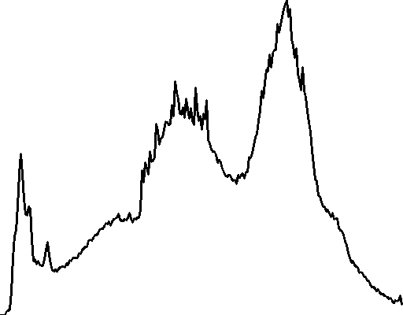
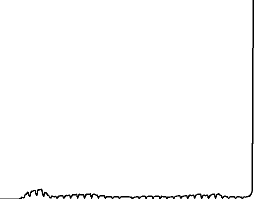

Este relatório explora o cálculo e a equalização de histogramas, bem como operações de limiarização,
utilizando conceitos e implementações em OpenCV. Os resultados foram organizados para os três integrantes do grupo.
1. Introdução
Histogramas são ferramentas essenciais na análise de imagens, pois permitem compreender a distribuição das intensidades
dos pixels. A equalização de histogramas é uma técnica que melhora o contraste das imagens, enquanto a limiarização é
utilizada para a segmentação, separando objetos de interesse do fundo.
2. Materiais e Métodos
A) Materiais
C++: Linguagem de programção utilizada para desenvolver os programas
OpenCV: Biblioteca open source de visão computacional
CMake: Ferramenta de automação de compilação
Webcam: Utilizada para capturar as imagens e vídeos
Objetos coloridos para os experimentos
B) Métodos
O relatório foi dividido em quatro itens, cada um com um objetivo específico. Para cada item, os integrantes do grupo
desenvolveram um programa em C++ utilizando OpenCV, que foi executado em suas máquinas. Os resultados foram organizados
em seções separadas, com as imagens originais, histogramas e imagens processadas.
3. Resultados e Análise
Item 1: Cálculo e Equalização de Histogramas
Apresentamos as imagens originais em tons de cinza, os histogramas antes e depois da equalização, e as imagens resultantes após a equalização para cada integrante do grupo. Essas imagens ilustram a eficácia do processo de equalização de histogramas na melhoria do contraste das imagens.
Felipe
Imagem OriginalImagem em Tons de CinzaHistograma OriginalImagem EqualizadaHistograma Equalizado
Leonardo
Imagem OriginalImagem em Tons de CinzaHistograma OriginalImagem EqualizadaHistograma Equalizado
Lia
Imagem OriginalImagem em Tons de Cinza

Histograma OriginalImagem EqualizadaHistograma Equalizado
Item 2: Leitura da Webcam
Resultados da leitura ao vivo utilizando a webcam, apresentando a imagem original capturada, o histograma original,
o histograma equalizado e a imagem equalizada para cada integrante do grupo. Essas imagens demonstram a eficácia
da equalização de histogramas em tempo real.
Felipe
Imagem em Tons de CinzaHistograma OriginalImagem EqualizadaHistograma Equalizado
Leonardo
Imagem em Tons de CinzaHistograma OriginalImagem EqualizadaHistograma Equalizado
Lia
Imagem em Tons de CinzaHistograma OriginalImagem EqualizadaHistograma Equalizado
Item 3: Limiarização e Imagem Binária
Resultados da binarização, apresentando a imagem original em tons de cinza, o histograma original,
a imagem equalizada, o histograma equalizado e a imagem binária resultante após a limiarização.
Esses resultados demonstram a eficácia da equalização de histogramas e da limiarização na segmentação
de objetos de interesse.
Felipe
Imagem em Tons de CinzaHistograma OriginalImagem EqualizadaHistograma EqualizadoImagem Binária
Leonardo
Imagem em Tons de Cinza

Histograma OriginalImagem EqualizadaHistograma EqualizadoImagem Binária
Lia
Imagem em Tons de CinzaHistograma OriginalImagem EqualizadaHistograma EqualizadoImagem Binária
Item 4: Equalização por Canais
Resultados da equalização de histogramas aplicada separadamente a cada canal de cor (R, G, B) e a imagem final resultante.
Esta técnica permite melhorar o contraste de cada canal individualmente, resultando em uma imagem com cores mais vibrantes
e melhor definição.